世界の葉巻ニュース 特集
特集 — プラセンシア
あなたのヒュミドールにある葉巻のうち、何本が「プラセンシア製」か、数えたことはありますか。ロッキー・パテル の看板も、ニカラグアで作られた モンテクリスト も、ケサダの カサ・マグナ も、この一族の巻き場から生まれました。従業員は6,000人を超え、年間の生産は4,000万本を超える（2015年時点の会社資料。Cigar Aficionado の現行の記述では4,500万本超）。そして「業界の約7割に葉を供給している」というのは、五代目当主 ネストル・アンドレス・プラセンシア 本人の推計です。世界最大級のタバコ栽培家であり、最大級の受託製造者でありながら、最終消費者の前では長く「無名」でいた一族。それがプラセンシアです。

物語は1865年、キューバのブエルタ・アバホに始まります。五世代の年代記には、1963年の農場接収と無一文の亡命、1979年の二度目の革命と亡命、1981年の青かび病による収穫の全滅が刻まれています。それでも一族は畑に戻り続け、葉と工場の帝国を築き上げました。そしてこの帝国は、「学校」でもありました。第5弾の主人公 AJフェルナンデス は、プラセンシアの下請けから巣立った卒業生です。オリバ家の創業も、プラセンシアの工場の中で起きました。
最大の謎は、なぜこの一族が2016年まで、自分の名を冠したブランドに本腰を入れなかったのかです。その答えの先に、ダビドフ との名義コラボ（2019年）という到達点があります。日本では、輸入元の タバナカ さんを通じて、自社ブランド30品目が届いています。本特集では、家族の年代記を骨格に、巣立っていった者たちの物語を縦糸として織り込み、「影の巨人」の素顔を追います。
本特集の事実関係は、専門誌・業界誌（Cigar Aficionado、Cigar Journal、Halfwheel、Cigar Coop、Cigar Dojo）、ブランド公式サイト（Plasencia Cigars）、工場訪問記（GQ Tobaccos）、本人の動画・ポッドキャストでの発言と SNS での開示で裏取りした範囲に基づきます。規模の数字（従業員数、生産量、葉の供給割合）は会社資料と本人の推計に依るものが多く、本文ではその都度、誰の数字かを分かるように書きました。資料によって年や数字が揺れる箇所（製造開始年、栽培面積、親族関係の表記など）は、検証欄に明記し、本文では断定を避けています。日本国内の状況は、当編集部が財務省の認可リストと国内販売店の掲載を照合した日本葉巻データベース（2026年11月18日時点）に基づきます。米国価格は当時の公表価格で、円換算は $1＝¥160 で計算しました。
◆ 一、ブエルタ・アバホの移民 ― 1865年、キューバ
始祖は ドン・エドゥアルド・プラセンシア。1865年、大西洋のカナリア諸島からキューバへ渡り、ピナール・デル・リオのブエルタ・アバホ――世界最高のタバコ産地とされる土地――で栽培を始めました。1890年には甥の シクスト・プラセンシア・フアレス が合流し、1898年に自らの農場を持ちます。1920年には「シクスト・プラセンシアの息子たち」（Hijos de Sixto Plasencia）を興して輸出を広げたとされます。その子、シクスト2世 は栽培家としての評判を築きました。なお、この初期の歴史は一族自身の語りに依る部分が大きく、同時代の公的記録で逐一裏が取れる性質のものではありません。それでも、1865年という年は一族の公式の系譜に刻まれ、2016年に設立された自社流通会社の名「プラセンシア1865」に、そのまま受け継がれています。
◆ 二、接収と亡命 ― 1963年、すべてを失って
転機は、カストロの革命でした。1963年、政権はプラセンシア家の全農場を接収します。1965年、一家は無一文でキューバを出ました。まずメキシコへ、2週間後にはタバコ会社2社からの誘いを受けてホンジュラスへ、そして3か月後、ニカラグア北部のハラパへ移り、シクスト2世 は再び栽培の仕事に就きます。出国した時、四代目となる ネストル・プラセンシア・シニア は15歳でした。彼は1969年に農業大学を卒業し、父と働いた後、自らの農場を持つようになります。亡命先でゼロから畑を作り直す――この「再建」の型は、やがて一族の家風そのものになっていきます。
◆ 三、二度目の革命！そして青かびとの戦い ― 苦難の四半世紀
安住は長く続きませんでした。1979年、ニカラグアでサンディニスタ革命が起き、キューバ出身者は危険な立場に置かれます。一家は再び亡命を余儀なくされ、ホンジュラスへ渡りました（シクスト2世 はマイアミへ）。追い打ちをかけるように1981年、青かび病が畑を襲い、収穫は100%全滅します。翌年も薬剤への耐性に苦しみ、ネストル・シニア は土地を売り、借金を抱えながら、それでも栽培をやめませんでした。

1985年（1986年とする資料もあります）、彼は垂直統合のために葉巻の製造を始めます。最初の顧客は Cigars by Santa Clara と Inter-American Cigars。小規模なプライベートラベルの生産からの出発でした。1990年の政権交代でニカラグアへ戻ると、エステリ近郊に、かつての所有地の30%に相当する土地を与えられます。1992年（1994年説もあります）にオコタルで工場生産を始め、後にエステリにも展開しました。1996年には欧州の ダンネマン と合弁で工場を建てますが、ダンネマンがプレミアム市場から退いた2000年代初頭に、その持分を買い取りました。そして1997年、一族は無借金経営に到達します。接収から34年。二度の亡命と一度の全滅を経た帝国は、ここに再建を果たしたのです。

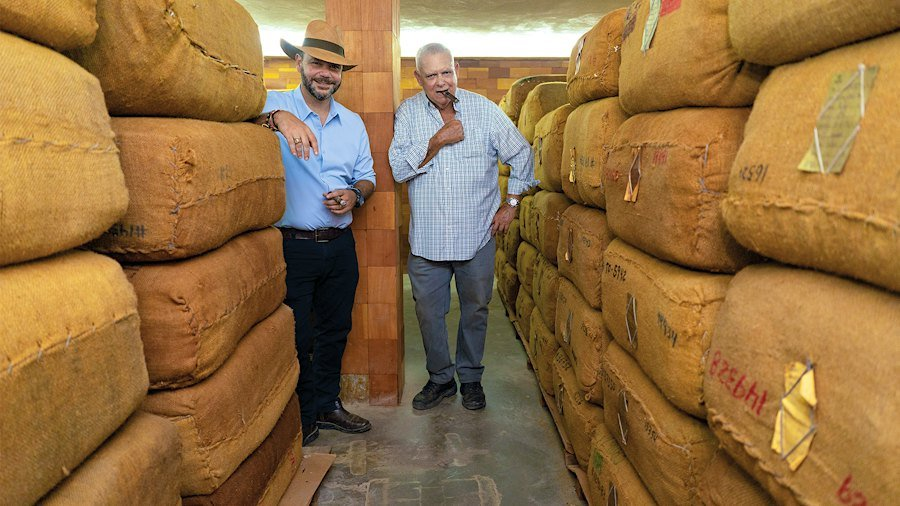
◆ 四、他人の名品を作る一族 ― 受託製造の帝国
プラセンシアの本業は、長く「他人の葉巻を作ること」でした。最大の顧客は ロッキー・パテル です。ホンジュラスのエル・パライソ工場にはパテル側の従業員が常駐し、自社仕様で巻かせる「工場の中の工場」体制が敷かれてきました。Cigar Aficionado はパテルを「最大の葉巻クライアント」と明記します。このほか、アレック・ブラッドリーの初期の生産、アルタディスの モンテクリスト・エスパーダ（ニカラグアで作られた初のモンテクリスト）やロメオ・イ・フリエタの一部、元ナット・シャーマンのマイケル・ハークロッツによるフェリオ・テゴ、グルカ、マヤ・セルバなど、委託先は大手からブティックまで広がります。
2017年、本人の初ポッドキャスト（Cigar Coop Prime Time Special Edition #17）で、ネストル・アンドレスは誇る受託作を自ら列挙しました。カサ・マグナ、ロッキー・パテル ディケイド、ロメオ 505、モンテクリスト エピック・クラフト・キュア、欧州向けのフロール・デ・セルバ、クルックス、ナット・シャーマン タイムレス。一方で、司会者が挙げた 262 Revere については「私たちは作っていない」とその場で訂正しています。自社の仕事とそうでないものを線引きする正確さは、この一族の語りの信頼感を支えています。
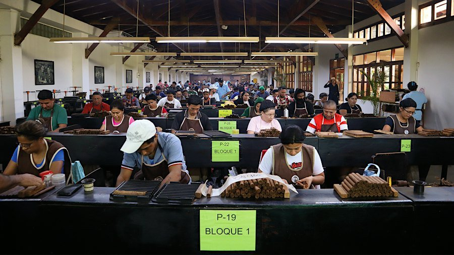
受託の中でも格が違うのが、ドミニカのマヌエル・ケサダとの共同開発 カサ・マグナ（2008年）です。ケサダがブレンドし、プラセンシアの工場で作られた カサ・マグナ・コロラド・ロブスト は、Cigar Aficionado の2008年 年間1位（Cigar of the Year）に選ばれ、93点を得ました。当時の価格は $5.25（約¥840）。「他人の名を巻く工場」が、評価誌の頂点に名を連ねた最初の大きな瞬間でした。

◆ 五、葉の帝国 ― 業界に葉を売る
受託製造の土台にあるのが、葉そのものの帝国です。一族の栽培はニカラグア（ハラパ、エステリ、コンデガ、オメテペ）とホンジュラス（ハマストラン、タランガ、オランチョ、サン・アグスティン）に広がり、栽培面積は4,000エーカー超（Cigar Aficionado）。収穫の約半分は生葉として他社へ販売されます（Cigar Journal）。買い手として名が挙がるのは、アルタディス、ダビドフ、ドリュー・エステート、ラ・フロール・ドミニカーナ、そして本シリーズの既刊主人公である E.P.カリージョ と ホヤ・デ・ニカラグア です。
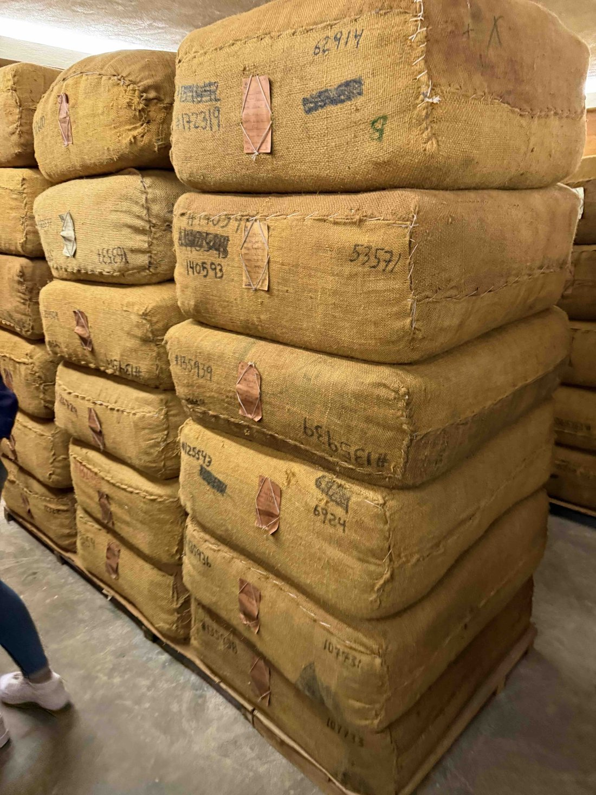
ネストル・アンドレスは Cigar Aficionado に「業界の約70%に葉を供給している」と語っています。これは本人の推計であり、第三者の統計ではありません。ただ、買い手リストの顔ぶれを見れば、この帝国が誇張だけで成り立っていないことは分かります。2017年の自社ブランド発表の場では、従兄弟のホルヘ・プラセンシアが「この会場の葉巻の約80%に我々の葉が入っている」と口にしました。数字の幅はあれど、「葉の帝国」という呼び名は業界の共通認識に近いものがあります。
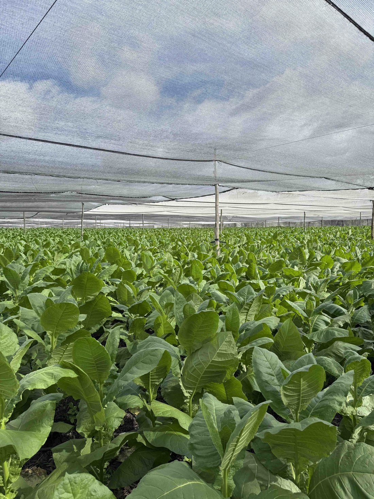
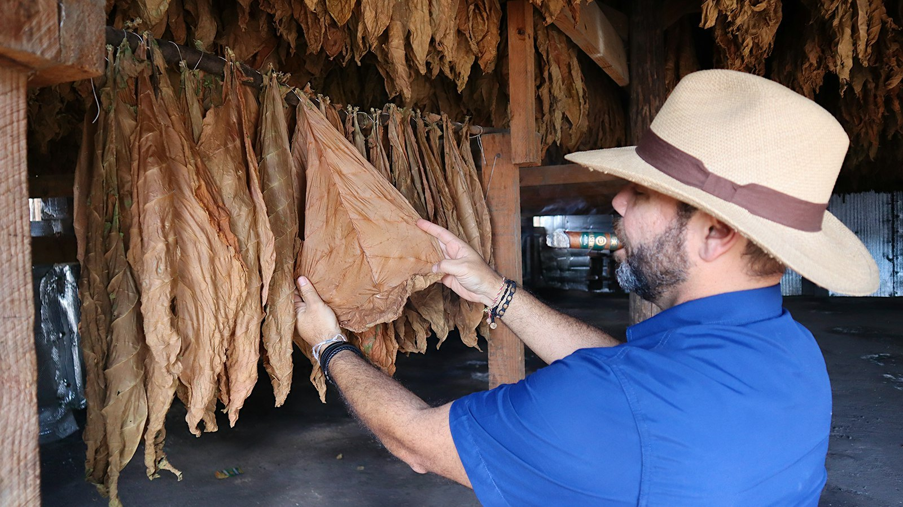
工場スペースの貸し出しも、この帝国のもう一つの顔です。ロッキー・パテルの自社要員がエル・パライソ工場の中で働く体制（四章）、そして次章以降に登場する二人の「卒業生」の物語もまた、この葉と工場の帝国の内側で起きたことでした。

© OpenStreetMap contributors, Map Data Legal Notices
■ 四角＝工場／● 丸＝畑／金の枠＝認証オーガニック農場のある産地
1 エステリ（ニカラグア）― 工場「カテドラル」・畑／認証オーガニック農場のある産地
2 オコタル（ニカラグア）― 工場
3 ダンリ（ホンジュラス）― 工場（タバコス・デ・オリエンテ／エル・パライソ）
4 ハラパ（ニカラグア）― 畑／認証オーガニック農場のある産地
5 コンデガ（ニカラグア）― 畑（フィンカ・サン・フリアンの産地）
6 ハマストラン渓谷（ホンジュラス、ダンリ近郊）― 畑
7 タランガ（ホンジュラス）― 畑
8 オメテペ（ニカラグア、ニカラグア湖の島）― 畑
◆ 六、無農薬への挑戦 ― 畑の章
この帝国には、もうひとつ別の顔があります。化学農薬と化学肥料を使わないタバコ作りへの、四半世紀を超える挑戦です。ただし、最初に線を引いておきます。プラセンシアの畑のすべてが無農薬なのではありません。一族の農地はニカラグア、ホンジュラス、コスタリカ、パナマにまたがって合計およそ3,000エーカー（約1,200ヘクタール。Cigar Journal 系の集計で、Cigar Aficionado は4,000エーカー超とします）。その大半は今も通常の方法で耕作されており、「認証オーガニック」の畑はその一部です。この章では、「認証を受けた畑」と「生態学的な手法を使う畑」を分けて書きます。
始めたのは五代目、ネストル・アンドレス でした。ホンジュラスの農業学校サモラーノで有機野菜の栽培を学び、1998年に家業へ入った彼は、タバコでも有機栽培をやりたいと父に持ちかけます。本人の言葉を引けば――「最初、父は私が少しおかしいと思った。でも心が開いていて、やらせてくれた」。最初の挑戦は惨敗でした。「何も知らなかった。牛糞も鶏糞も試した。何も育たなかった。タバコは小さく黄色くなり、害虫だらけだった」。転機はミミズでした。ミミズの糞（バーミコンポスト）を肥料にすると、タバコは見違えるように育ったのです。末弟 ホセ・ルイス の語りでは、試行錯誤に約2年をかけ、認証を得て生産に入りました。最初の農場が OCIA（国際的な有機認証団体）の認証を得たのは、2000年のこととされます。
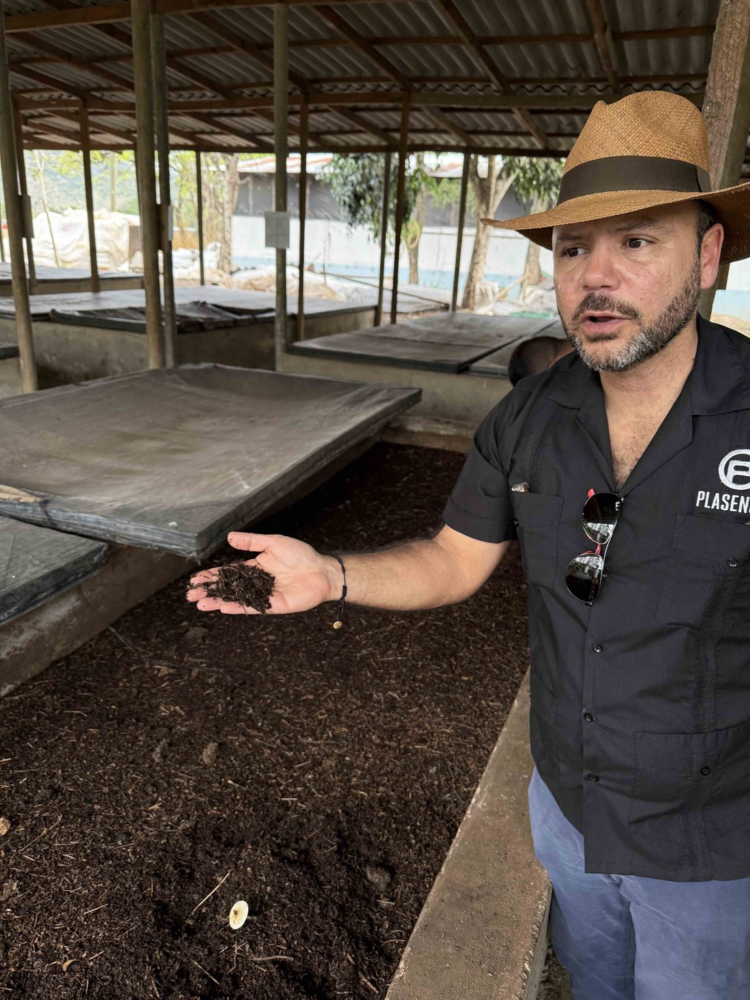
認証オーガニックの葉が育つのは、エステリとハラパの農場です。その葉だけで作るのが、2002年に生まれた レセルバ・オルガニカ、現在の レセルバ・オリジナル。全葉が OCIA 認証の有機タバコで作るニカラグア・プーロで、葉は発酵のあと5年以上寝かせるといいます。第三者の評価も伴います。Cigar Journal 誌は2013年、プラセンシアを「長年、大規模な認証オーガニック・タバコの唯一の栽培者」と評しました。実際に農場を訪ねた小売店の担当者2人は、2025年の対談で「タバコで有機を正しくやったのはネストルだけだ。プラセンシアが有機だと言えば、本当だと信じていい。正しい認証を取っている」と証言しています。
有機タバコは、この一銘柄だけの話でもありません。本人は2016年のインタビューで「ほかの葉巻にも有機タバコを使い始めている」と語り、ホセ・ルイス も「全ブランドのブレンドに、有機タバコが一部入る」と話します（銘柄ごとの割合は公表されていません）。2026年の新作 トリウンファル も、オーガニック葉を使うラインとして発表されました。そして最新作 アルマ・デル・シエロ の故郷、フィンカ・サン・フリアンでは、本人が「有機タバコの開発を試みている」と2025年末に語っています。高地の畑と有機栽培を組み合わせる、現在進行形の実験です。
認証の有無とは別に、有機栽培で編み出された手法は、通常栽培の畑にも広く浸透しています。本人いわく「有機のやり方の一部は、通常生産にも取り入れている。少しでも持続可能に」。ミミズ堆肥は通常のタバコにも使われています（ブランド・ドキュメンタリー「The Hands Of Plasencia」（2024年）の農場ツアーでは、スタッフがそう案内し、ミミズへの給餌は「3日ごとに新しい餌を、2か月間」、原料はタバコの葉脈や段ボールだと説明しています）。2024年の農場ツアー取材は、緑の廃棄物（使えない葉）と茶色の廃棄物（茎、段ボール、牛糞）を決まった比率で層に積み、機械で切り返し、丘の上の容器でミミズに処理させて肥料にする工程を詳しく伝えました。液体化して点滴で届ける施肥（ファーティゲーション）は、ネストル・アンドレスが最初に導入し、今では皆が使う方法だと、農場を訪ねた小売担当者は証言します。
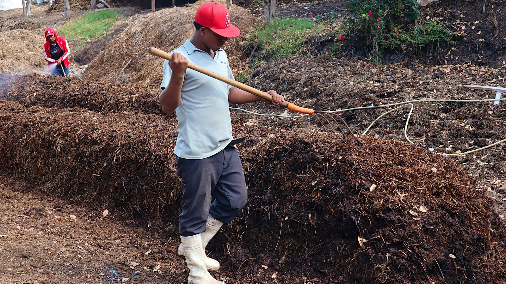
具体策は、病気と虫と水の3つに分かれます。病気には、菌と輪作で。根にすむ菌トリコデルマを使い、根腐れ病（ブラックシャンク）を防ぎます。作物の合間にはベルベットビーンを育てて空気中の窒素を土へ戻し、輪作と組み合わせて病原を土壌から消していきます。虫には、匂いと天敵と罠で。虫の嫌うニンニクの抽出物、有機殺虫剤のニーム。そして畑に植えられたヒマワリが、益虫を呼び、害虫の目を葉から逸らします。Cigar Aficionado のハラパ取材は「虫は、最も高価なラッパー葉よりヒマワリを好む」と書きました。糖液を入れた容器で虫を誘う「ハニートラップ」も、同じ取材が畑で撮影しています。水は、土に蓄えて、株元へ。有機物の多い土は水を保つため、灌漑の水が少なくて済む（本人の言葉）。地下およそ20インチの配管で株元に直接水を届ける仕組みも、農場ツアー取材が伝えています。
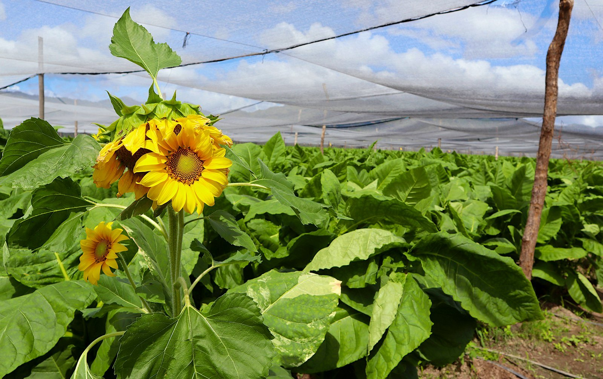


その先にあるのが、再生型農業です。植物そのものではなく、土地と土の中の微生物を育てる考え方で、本人は2024年の農場ツアーで「10年以内に、肥料そのものが要らなくなる可能性がある」と語り、「環境を競争の道具にするな」と同業への普及まで望みました。農場を訪ねた小売担当者の対談でも「有機は昨日のニュースになりつつある。再生型は土地と微生物を育てる」という受け止めが語られています。なお再生型農業は、定義のうえでは有機と同一ではなく、化学資材の使用を完全には排除しない考え方です。本編では両者を分けて扱います。
なぜ、儲からないと分かっていることに四半世紀を費やすのか。本人の言葉が一番正直です。「レセルバ・オルガニカは儲けにはならない。でも、金のためじゃない。もっと持続可能である必要があるし、そうしたい。土にも環境にもいい」。そして「持続可能な方法でタバコを育てられれば、葉巻づくりはもっと何世代も続く」。タバコという植物については、こうも言っています。「タバコは成長が速く、病気も多い、荒々しい植物だ。だから普通でも難しいのに、有機はもっと難しい。でも、魅力的だ」。目指す味は、コロンブスが初めて出会ったタバコ――先住民ニカラオの方法で育てた葉の再現だという物語が、レセルバ・オリジナル の公式コピーに通底しています（家では「コロンブスが初めて吸った葉巻」という冗談になっているそうです）。公式チャンネルが2023年に公開した農場フィルム2本をはじめ、畑の映像と写真がこれほど多く残る葉巻メーカーも珍しくありません。
認証オーガニックは農場の一部（エステリ／ハラパ産の葉、OCIA 認証）の話であり、全農地の大半は通常栽培です。有機区画の正確な面積は会社も公表しておらず、本編では割合を断定していません。開始年には本人の語りに幅があります（入社と提案は1998年、試行錯誤は約2年、最初の認証取得は2000年、生産開始を2001年とする語りもあります）。「世界初の完全オーガニック葉巻」は会社側の位置づけであり、第三者機関が「世界初」を認定した記録は確認していません。一方で、Cigar Journal 誌（2013年）が「大規模な認証オーガニック・タバコの唯一の栽培者」と評したことと、農場を訪ねた小売担当者の証言は、第三者の裏付けとして本文に記しました。灌漑の見直しで「水使用量50%削減」という数字は会社・小売側の流通コピーのもので、独立した検証はないため、本文では採用していません。栽培面積の総計も資料で幅があります（Cigar Journal 系で約3,000エーカー、Cigar Aficionado で4,000エーカー超）。
◆ 七、卒業生その一 ― AJフェルナンデス、3台の巻き台から
この帝国の「学校」から巣立った最大の卒業生は、本シリーズ第5弾の主人公です。父イスマエルがキューバを出て、プラセンシアの下で働いた AJフェルナンデス は、2003年にニカラグアへ渡りました。最初の1年は、プラセンシアへ葉を売る栽培業者の下で働いたとされます。その後、自宅に巻き台を3台置き、プラセンシアから葉の提供を受けて葉巻を巻き、プラセンシアが買い取る――下請けとして、独立の第一歩を踏みました。AJ本人の言葉が残っています。「3台の巻き台で、ネストルのために月に2万本を巻いた」（Cigar Aficionado）。やがて最初の大口顧客 ロッキー・パテル を得て、2005年に Tabacalera Fernandez を開設します。「世界の半分のブランドを巻く男」になった彼の起点は、プラセンシアの下請けだったのです。第5弾で描いた「一介の栽培家から身を起こした男」の物語は、この帝国の内側から始まっていました。
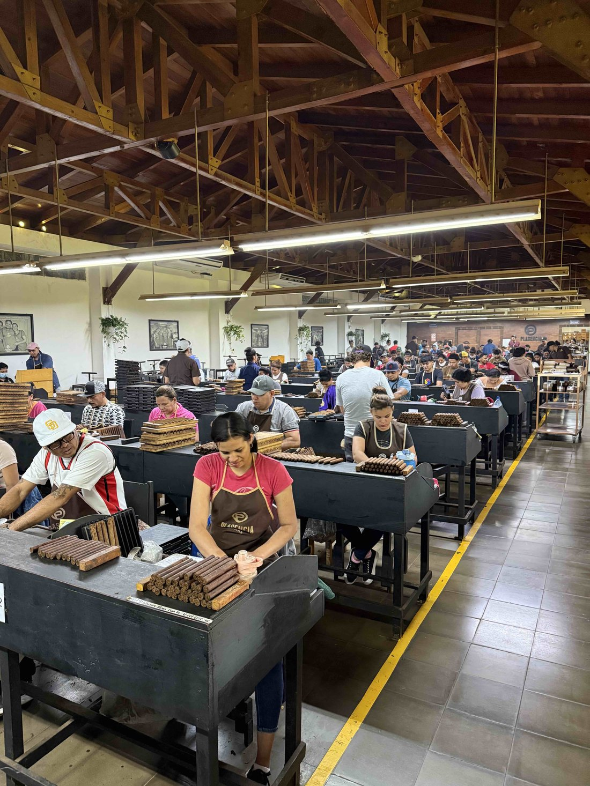
AJの父とネストル・シニアの関係は、資料によって表記が揺れます。Cigar Aficionado は「父イスマエルの従兄弟」、Cigar Journal は「AJの叔父」と書きます。AJのニカラグア到着年にも、2003年（両誌）とする記述と1990年代半ばとする二次情報があります。本編では親族関係の呼び名と細部の年次を断定せず、「プラセンシアの下で働いた父を持つAJが、下請けから独立した」という、複数出典で一致する骨格だけを書きました。下請けの規模（巻き台3台、月2万本）は、AJ本人が Cigar Aficionado に語った数字です。
◆ 八、卒業生その二 ― オリバ、工場の中で生まれた家
もう一人の卒業生は、工場の「運営者」でした。ヒルベルト・オリバ・シニア は1990年代初頭、プラセンシアが1991年に開いたホンジュラス・モロセリの工場を運営していました。そして1995年、彼はそのプラセンシアの工場の中で、息子のヒルベルトJr.と共に自らの名を冠した「Gilberto Oliva」を創業します。翌1996年、貯えをもとにニカラグアに自社工場を開き、ブランド名を オリバ と短縮しました。後のオリバ・シガー・カンパニー――メラニオ が Cigar Aficionado の2014年 年間1位に輝く家――の出発点は、プラセンシアの巻き場だったのです。オリバ家は2016年にベルギーの J. Cortès へ事業を売却し、ヒルベルト・シニアは2017年に86歳で逝去しました。
助言レベルにとどまる接点もあります。アガノルサの エドゥアルド・フェルナンデス は、1998年のニカラグア参入の際にネストル・プラセンシアから栽培の現実を教わったとされますが、雇用関係ではないため、本編では卒業生には数えません。「社員として働いて巣立った」例は、AJとオリバの2例が確認できる範囲です。ドリュー・エステートほど人数は多くありませんが、AJが本シリーズの既刊の主人公本人である点で、この縦糸の太さは互角以上だと考えます。
◆ 九、ダビドフとの四つの接点 ― 葉の取引から、名義コラボへ
「プラセンシアとダビドフは繋がりが大きい」という話を耳にすることがあります。調べると、その接点は4つの層で事実として支持できました。第一に、葉の取引です。ダビドフ・オブ・ジュネーブ はプラセンシアの葉の買い手として、Cigar Aficionado と Cigar Journal の双方に名が挙がります（ただし、ダビドフのどの銘柄にどの葉が使われているかは公表されていません）。第二に、名義コラボ。第三に、英国での流通をダビドフが担うという工場訪問記の記述（根拠は小売店の訪問記ひとつで、裏取りは弱めです）。第四に、人事。ダビドフの米国事業を約10年率いた ジム・ヤング が、2023年にプラセンシアの取締役・暫定CEOに就きました（後任の現CEOは、2025年4月に就任したディアジオ出身の エド・ベロ です）。なお資本面では、General Cigar（STG系）が株式の20%を保有する少数株主で、経営の主導権は一族が握っています（Cigar Aficionado）。
第二の層は、この特集でも白眉のひとつです。2019年、「プラセンシア・シガーズ・フォー・ダビドフ・オブ・ジュネーブ・シンス1911」が発売されました。ベリコソ 6×52、7年以上熟成の葉を使ったニカラグア・プーロで、300箱×20本の限定。1本 $16（約¥2,560）、箱 $320（約¥51,200）。2019年5月2日、ニューヨークのダビドフ旗艦店で発売イベントが開かれました。「他人の名を巻いてきた一族」が、世界で最も名の通った葉巻ブランドと、自分の名を並べて箱に刷ったのです。

切り分けが要るのは、コラボの相手です。2019年の共同制作の相手は、ダビドフの小売部門「Davidoff of Geneva Since 1911」で、葉巻の製造部門とは別組織だと Cigar Dojo が明記しています。ダビドフ本体（Davidoff Cigars）の看板ラインの製造をプラセンシアが受託した事実は、今回の調査では確認できませんでした。「ダビドフの葉巻はプラセンシアが作っている」とは書けません。確認できるのは、葉の供給先であることと、小売部門との名義コラボが実在することです。英国流通についても、根拠は工場訪問記（GQ Tobaccos、2025年）ひとつのため、本文では「裏取りは弱め」と添えました。
◆ 十、自分の名を冠すまで ― 2016年、150年目の署名
では、なぜこの一族は、自分の名の葉巻に本腰を入れなかったのか。製造を始めた1985年以来、本業は一貫してプライベートラベル（他ブランドの受託）でした。Cigar Journal は「1985年に製造を始めて以来、主眼はプライベートラベルだった。自社ラインは脇のプロジェクトだった」と明記します。自社名義が皆無だったわけではありません。ネストル・アンドレス 本人が「始まりは1987年」と語る「プラセンシア」名義のラインや、クラシカ、レセルバ1898 が細々と存在し、2002年には六章の レセルバ・オルガニカ も生まれています。しかし本人たちも認める通り、それらは「儲けにはならない」脇の仕事でした。
転機は2016年10月です。フラッグシップライン アルマ・フエルテ が発売され、一族は自社流通会社「プラセンシア1865」を米国に設立して、流通まで自らの手に握りました。2017年の見本市 IPCPR で自社ブースを初めて見た ネストル・アンドレス は、「ブースに私たちの名前があるのを見て、プラセンシアの名が付いた葉巻を全部見て、鳥肌が立った」と語っています。動機を末弟 ホセ・ルイス は、こう説明します。「業界は私たちを知っていたが、最終消費者は私たちが誰かを知らなかった」。従兄弟の ホルヘ・プラセンシア は同じ場で「B2BからB2Cへ」と宣言しました。会社公式の発信（2026年）も、この転機を「一族が、ずっと自分たちのものだった仕事に、ついに署名した」と振り返っています。1865年の創業から151年。葉の一大帝国は、ようやく自分の名を名乗り始めたのです。

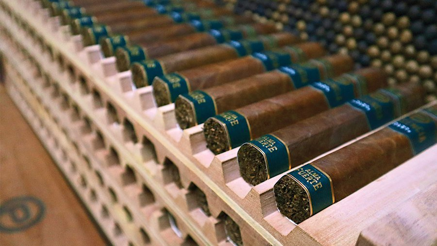
◆ 十一、ラインの系譜 ― アルマとコセチャ
2016年以降の自社ラインは、2つの言葉で編まれています。「アルマ（魂）」の系統――フエルテ（強い）、デル・カンポ（野）、デル・フエゴ（火）、デル・シエロ（空）――と、収穫の回数を刻む「コセチャ（収穫）」の系統です。最新作 アルマ・デル・シエロ（2025年4月発売）の故郷、コンデガのフィンカ・サン・フリアンは、物語を持つ畑でもあります。もともと ネストル・シニア の妻の実家の農場で、母方の祖父が病気のために1960年代初頭に手放したものを、1990年代後半にシニアが所有者を探し出し、妻への贈り物として買い戻した土地でした。標高3,500フィートを超える高地で10年ほど前から栽培を試み、今はこのライン専用に使われています。
| ライン（デビュー） | 製造 | 産地・葉 | 備考・評価 |
|---|---|---|---|
| アルマ・フエルテ（2016） | エステリ工場 | ニカラグア4産地（エステリ／コンデガ／ハラパ／オメテペ） | 自社名義のフラッグシップライン ヘネラシオンVが CA Top 25 of 2017 第9位・93点 |
アルマ・デル・カンポ（2017） | エステリ工場 | オメテペの火山性土壌を軸に | 「野」の系統 |
| アルマ・デル・フエゴ（2019） 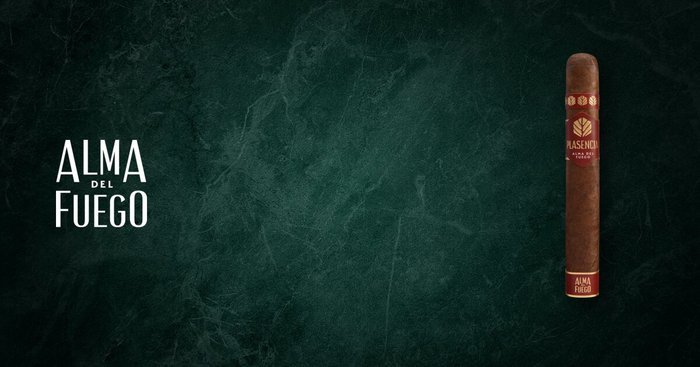 | エステリ工場 | オメテペ | 「火」の系統 コンセプシオンが CA Top 25 of 2019 第13位・93点 |
アルマ・デル・シエロ（2025） | エステリ工場 | コンデガ・フィンカ・サン・フリアン（標高3,500フィート超） | 「空」の系統。3サイズ $25〜$29.50（約¥4,000〜¥4,720） |
| コセチャ146（2016〜17） 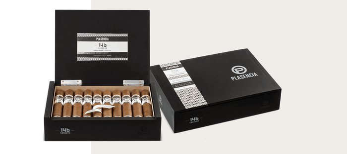 | ―（資料で割れる） | 2011年収穫＝一族146回目の収穫 | 2023年9月に製造終了（その収穫の葉を使い切ったため） CA Top 25 に2度（2018年 第24位／2020年 第19位・93点） |
| コセチャ149（2021） 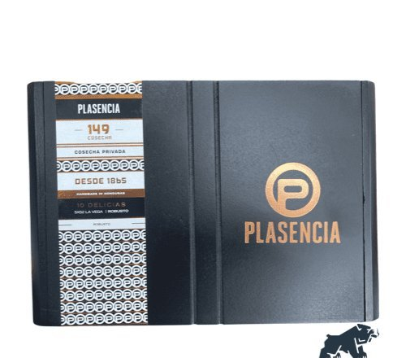 | ダンリ工場 | オール・ホンジュラス（ラッパーはオランチョ） | 2014年収穫 トロが Cigar Journal「Best Cigar Honduras 2026」受賞 |
コセチャ151（2023） | ダンリ工場 | ホンジュラス・プーロ | 151回目の収穫 ラ・ムジカが CA Top 25 of 2024 第17位 |
レセルバ・オリジナル（2002／改名・再発売 2017） | エステリ工場 | エステリ／ハラパの OCIA 認証オーガニック葉 | 全葉が認証オーガニックのプーロ（六章） コロナが CA Top 25 of 2022 第25位・92点 |
トリウンファル（2026） | ダンリ工場 | オーガニック葉を使用 | 2026年の新ライン（PCA誌）。詳細は発表段階 |
評価誌との関係も、対照的な先行2回と比べると独自の色があります。第10弾のサカは Cigar Aficionado の採点対象外、第11弾のメリーロは常連でした。プラセンシアは、自社名義の本格化が2016年と遅かったにもかかわらず、同誌の年間 Top 25 に6度名を連ねています。受託の最高到達点である カサ・マグナ の2008年 年間1位（四章の裏話）と合わせれば、この一族の仕事は、他人の名でも自分の名でも、頂点に届いてきたのです。
| 年 | ライン（ビトラ） | 順位・得点 |
|---|---|---|
| 2017 | アルマ・フエルテ・ヘネラシオンV | 第9位・93点 |
| 2018 | コセチャ146 サン・ルイ | 第24位 |
| 2019 | アルマ・デル・フエゴ・コンセプシオン | 第13位・93点 |
| 2020 | コセチャ146 ラ・ベガ | 第19位・93点 ※ |
| 2022 | レセルバ・オリジナル・コロナ | 第25位・92点 ※ |
| 2024 | コセチャ151 ラ・ムジカ | 第17位 |
もうひとつのトロフィーがあります。コセチャ149 トロ が、Cigar Journal 誌の読者投票「Cigar Trophy」で「Best Cigar Honduras 2026」を受賞しました（InterTabac で発表、会社公式の発信は2026年9月）。このトロは、当サイトの読者（メンバー）からのリクエスト品でもあります。海外の格安店では長く「最安候補」として追ってきましたが、2026年11月18日の朝、その店のブランドページから姿を消しました。人気と品薄は、このラインにも及んでいるようです。
コセチャ146のブレンドと産地は、資料によって記述が割れます。Cigar Journal は「100%ニカラグア」、Vitola は「ホンジュラス・ラッパー＋ニカラグア・バインダー、ホンジュラス製」とし、一族の語りも、ネストル・アンドレスの「ホンジュラスとニカラグアのブレンド」（2017年）とホセ・ルイスの「大半がホンジュラス葉、ホンジュラス工場製」（2021年）で幅があります。本編の表では製造・産地を「―（資料で割れる）」とし、単一の産地を断定していません。名前の由来である「2011年収穫＝146回目の収穫」と、2023年9月の製造終了（葉を使い切ったため）は、複数出典で一致しています。
◆ 日本編 ― タバナカさんが運ぶ「影の巨人」
日本でのプラセンシアの景色は、第11弾ファウンデーションの「0件」とは対照的です。当編集部の日本葉巻データベース（2026年11月18日時点）では、自社ブランドだけで30品目を数え、うち21品目が国内で販売確認済みです。輸入元は、タバナカ さん――正式にはタバナカ株式会社（旧・ハバナカ株式会社。2021年に商号変更した同一法人で、代表は 中村暢博 さん）です。販売店の商品データに付された輸入元欄の記載と、商品タイトルの「［タバナカ輸入］」表記から確認しました。なお、当データベースの元になる財務省の認可リストには輸入元の欄自体が存在しないため、この欄は長く空欄でした。「未調査」ではなく「一次資料に無い」情報だったのです。
棚の顔ぶれは充実しています。大越酒店 さんで16品目、AUN Smoke さんで9品目（重複を含みます）。フラッグシップライン アルマ・フエルテ は AUN Smoke さんで ¥3,300〜3,900、アルマ・デル・カンポ と アルマ・デル・フエゴ は両店で ¥2,700〜3,700、最新作 アルマ・デル・シエロ は認可定価 ¥4,000〜4,450、コセチャ146 は大越酒店さんで ¥3,000、レセルバ・オリジナル（白帯）は ¥2,100〜2,450 で並びます。さらに「プラセンシア製」の他ブランドは45品目（販売確認24品目）――ドン・ドゥアルテ 18品目、フェリオ・テゴ 8品目、レジウス 7品目、ダニエル・マーシャル 6品目、キャピトル 4品目など。日本の棚にも、この帝国の仕事は静かに広がっています。
正直にお伝えすべき点がひとつあります。コセチャ149 ラ・ベガ は、大越酒店さんの楽天市場に「［タバナカ輸入］」として販売掲載があり、新宿の Kagaya SmokeWeb さんにも取扱いの掲載があります。ところが当データベースの土台である財務省の認可リスト側には、この銘柄の行が見つかっていません。販売の掲載と認可リストの照合は現在も続けており、確認が取れ次第、データベースに反映します。
九章のダビドフとの接点から、「日本の代理店もダビドフジャパンではないか」という見方が出るかもしれません。今回の調査では、ダビドフ側の日本向け情報にプラセンシアの取扱いを示す記載は見つからず、この見方の裏は取れませんでした。販売店の商品データで一貫して確認できた輸入元は、タバナカ株式会社（旧・ハバナカ株式会社）です。なお、2020年時点の二次情報には別の輸入元名を挙げるものもありますが、現在の販売店データとは食い違うため採用していません。輸入元が過去に異なっていた可能性までは否定できませんが、裏は取れていません。
◆ 結び ― 影の巨人の署名
五世代、1865年から続く一族の仕事は、長く他人の名の影にありました。接収と亡命、革命と全滅を越えて築かれた葉と工場の帝国は、AJフェルナンデスとオリバという卒業生を送り出し、ダビドフと名を並べ、四半世紀にわたって無農薬の畑を耕し続けています。そして2016年、その帝国はついに自分の名を名乗り始めました。「業界は私たちを知っていたが、最終消費者は私たちが誰かを知らなかった」――その距離は、まだ縮まり始めたばかりです。あなたのヒュミドールの次の1本がプラセンシアの名を巻いていたら、その向こうに160年の年代記があることを思い出してください。
最後に、次回への橋を一つ。本特集のプラセンシアは、サカとメリーロを送り出したドリュー・エステートにとって、葉の買い手としての取引先であり、卒業生を送り出す「学校」同士の相手でもあります。残るのは、その古巣そのものの物語です。インフュージョンの革命児が、リガ・プリバーダを生み、二人の卒業生を輩出し、買収と再編を経て、今どこに立っているのか。次回は、ドリュー・エステート そのものを追います。